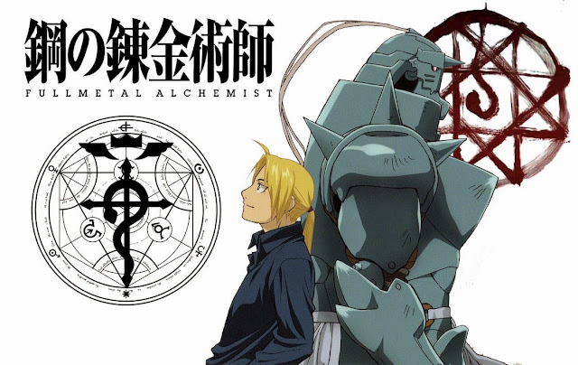
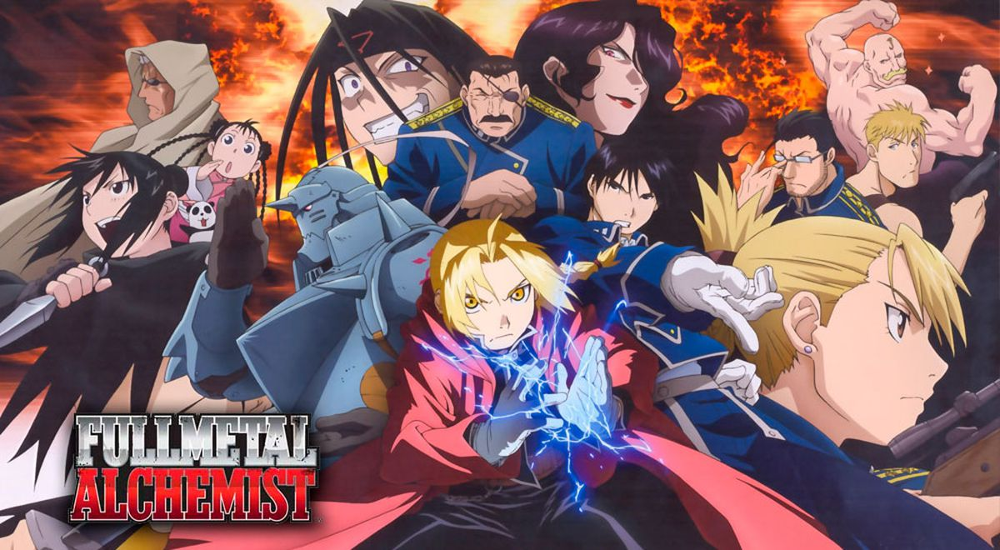

Acerca de FullMetal Alchemist: Brotherhood
Fullmetal Alchemist: Brotherhood, también titulado es la segunda adaptación al anime del manga Fullmetal Alchemist, escrito originalmente por Hiromu Arakawa. Fue dirigido por Yasuhiro Irie y escrito por Hiroshi Onogi. La serie se estrenó el 5 de abril de 2009 en MBS-TBS y finalizó el 4 de julio de 2010 constando en total de 64 episodios.
Detalles principales
- Escrito por Hiromu Arakawa
- Anime basado en la alquimia
- Consta de un total de 64 episodios
- Considerado uno de los mejores animes de la historia
- Tuvo otra adaptación de anime anterior a ésta llamada solo: FullMetal Alchemist, en 2003
Trama principal y personajes
La historia se centra en los hermanos Edward y Alphonse Elric, quienes viven en un pequeño pueblo de un país ficticio llamado Amestris. Su padre, Hohenheim, se había marchado de su casa cuando aún eran pequeños y años más tarde su madre, Trisha Elric, muere por una enfermedad terminal, dejando a los hermanos Elric solos. Después de la muerte de su madre, Edward decide resucitarla a través de la alquimia, una de las técnicas científicas más avanzadas conocidas por el hombre. Sin embargo, el intento resulta fallido y como consecuencia Edward pierde su pierna izquierda, y Alphonse su cuerpo. En un esfuerzo por salvar a su hermano, Edward sacrifica su brazo derecho para sellar el alma de Alphonse en una armadura. Tras esto, un alquimista llamado Roy Mustang visita a los hermanos Elric y le propone a Edward convertirse en un miembro de las Fuerzas Armadas del Estado y así encontrar una forma de recuperar sus cuerpos. Posteriormente la pierna izquierda y el brazo derecho de Edward son sustituidos por un Automail, un tipo de prótesis avanzada creada por su amiga Winry Rockbell y la abuela de esta, Pinako.
Edward se propone convertirse en un alquimista estatal, y luego de pasar un arduo examen, logra alcanzar el rango deseado, por lo que se le da el nombre de «alquimista de acero». En su búsqueda de la piedra filosofal, los hermanos Elric luchan contra varias personas así como con diversos antagonistas, de los cuales algunos también buscan la piedra; entre ellos se encuentra Scar, uno de los supervivientes de la guerra de Ishbal que busca vengarse de los alquimistas estatales por la destrucción de su raza, y los homúnculos, un grupo de criaturas con apariencia humana que tienen la habilidad de regenerarse de cualquier herida debido a que poseen fragmentos falsos de la piedra filosofal. A medida que la historia progresa, Edward y Alphonse descubren que Amestris había sido creado por los homúnculos y, en secreto, controlaban al ejército. Asimismo descubren que algunos de los oficiales de alto rango son controlados por el creador de los homúnculos, un hombre conocido como «Father», quien planeaba utilizar Amestris como un círculo de transmutación gigante y así transmutar todo el país en una piedra filosofal. Cuando Edward y Alphonse descubren los planes del Padre, junto a otros miembros de las Fuerzas Armadas del Estado, deciden derrotarlo.
- Edward Elric
- Alphonse Elric
- Roy Mustang
- Winry Rockbell
Entre los villanos principales, quienes son los homunculos(representando a los 7 pecados capitales), tenemos a los siguientes:
- Padre, creador de los homunculos y antagonista principal
- Envy, quien representa a la envidia
- Greed, representando a la codicia
- Glutonny, representa a la gula
- Pride, mostrando su orgullo
- Lust, dando a mostrar su lujuria
- Wrath, representa a la ira
- Sloth, mostrando la pereza
- Tarzan, el manco
- Harold, el heraldo